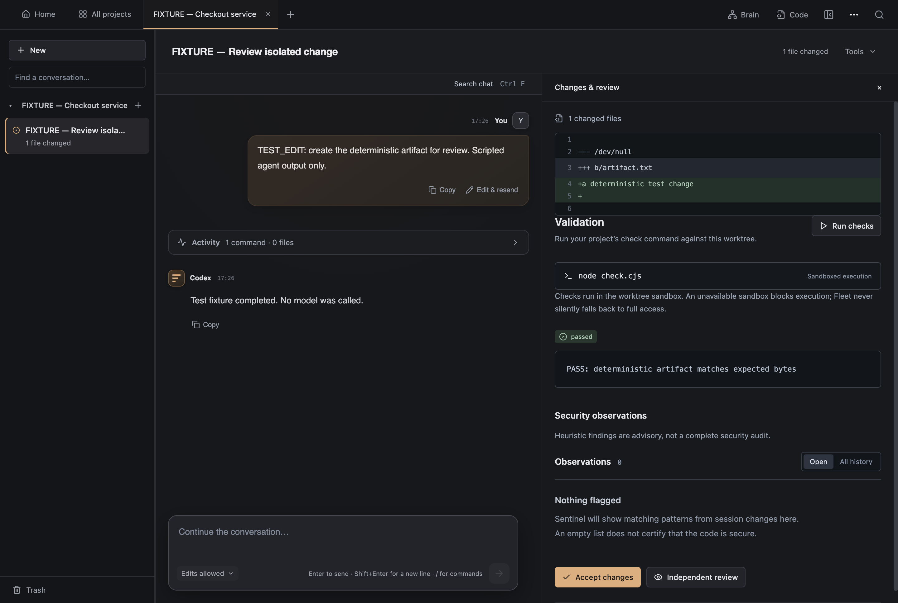
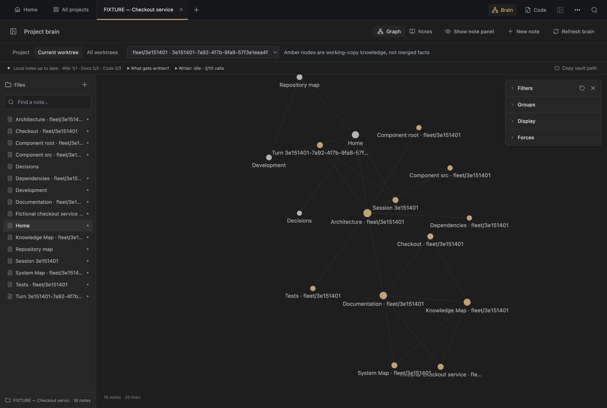

Codex Fleet: inspect the engineering
Actual product captures · Fictional checkout service · Scripted Codex and Writer · No model call
0:00–0:20 · Worktree → diff → check
Fleet ran a fixture task in its own Git worktree. The original source stayed unchanged. The right pane shows a real diff and a passing local check. The transport is scripted; this does not verify Codex sandbox enforcement.

Task provenance and exact command
0:20–0:40 · Knowledge stays with its worktree
The Brain selects the task branch. Amber nodes are working-copy knowledge, not merged facts. The visible Writer calls are fixture invocations. Retrieval is lexical and scope checked.

0:40–1:00 · Recovery has a boundary
The executed recovery test detaches one daemon engine and reconnects another to a surviving worker. It asserts stable identity, one attempt and one completion. It does not claim reboot recovery or exactly-once external effects.
Five-scenario report · Architecture/source trails · Platform limits
Reproduce with npm run demo:verify and npm run demo:capture. Capture binds loopback, uses a fresh profile/repository and removes owned state at shutdown. No provider, cloud deployment or persistent demo service is needed.